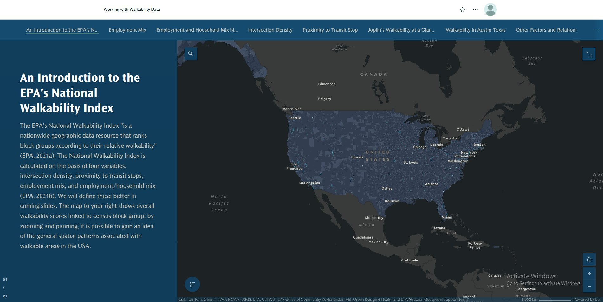
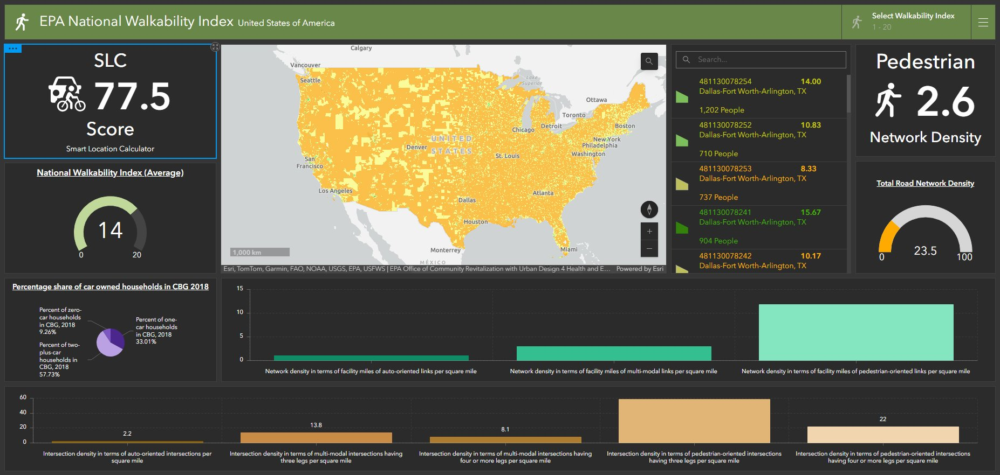
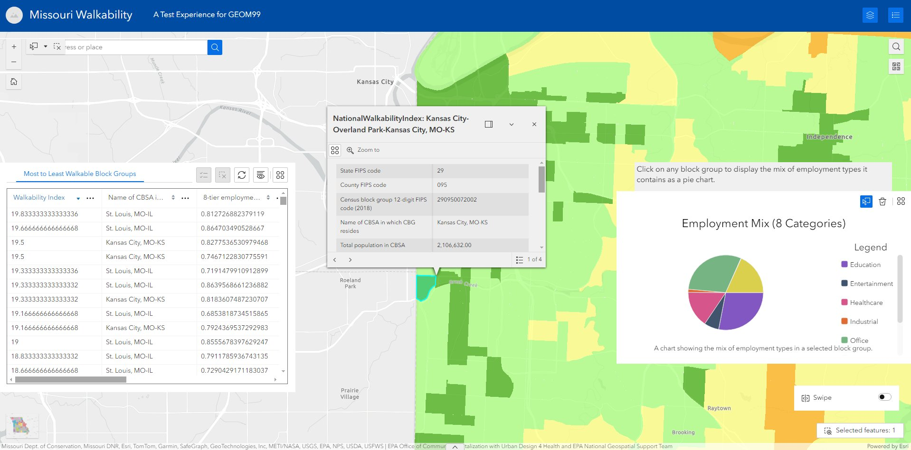
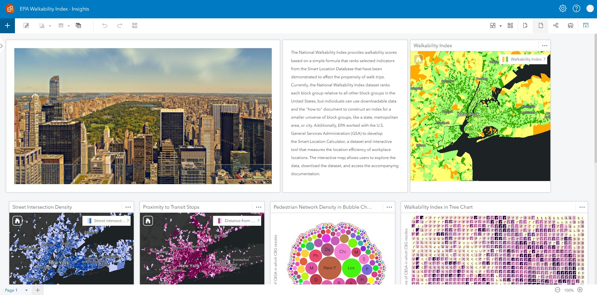
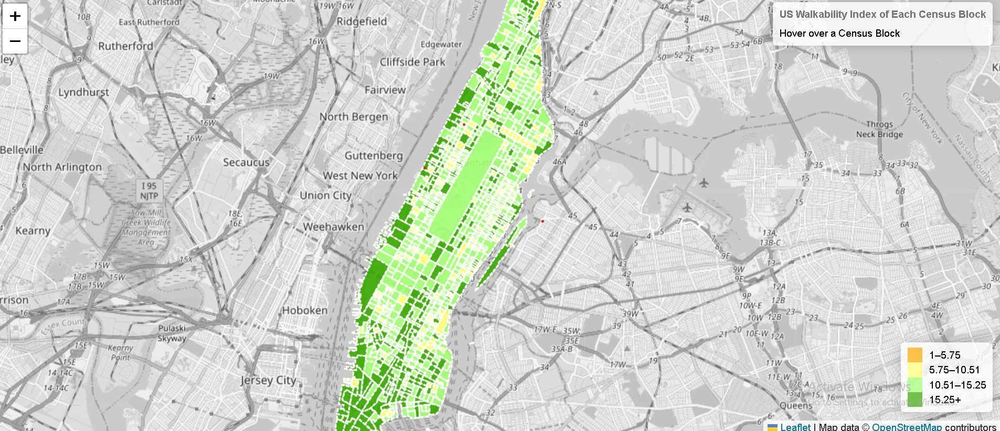

Web GIS Applications
ArcGIS Online · Leaflet.js · Experience Builder
Interactive applications analysing the EPA National Walkability Index across US census block groups — built using the full ArcGIS Online suite and Leaflet.js.

ArcGIS StoryMap — EPA Walkability Index
21-slide scrolling narrative covering intersection density, employment mix, household mix and transit proximity across US census block groups.
ArcGIS StoryMaps

ArcGIS Dashboard — National Walkability
SLC score (77.5), pedestrian network density (2.6), car ownership charts and intersection density with live filtering across US block groups.
ArcGIS Dashboard

Experience Builder — Missouri Walkability
Multi-widget app — attribute table, interactive map, dynamic employment mix pie chart, and swipe widget for Missouri walkability analysis.
Experience Builder

ArcGIS Insights — Walkability Analytics
Multi-card Insights workbook — intersection density, transit proximity, pedestrian network bubble chart, and walkability tree chart for New York metro.
ArcGIS Insights

Leaflet.js — NYC Walkability Map
Choropleth map showing walkability index per census block across Manhattan. Hover tooltips, 4-class colour ramp, OpenStreetMap basemap.
Leaflet.js · JavaScript
Toronto Experience Builder
Experience Builder — Toronto Noise Equity
5-page interactive app. Finding cards link to GWR map, bivariate ward map, patrol route, and accessibility score — all with meaningful legends and popups.
Open App ↗